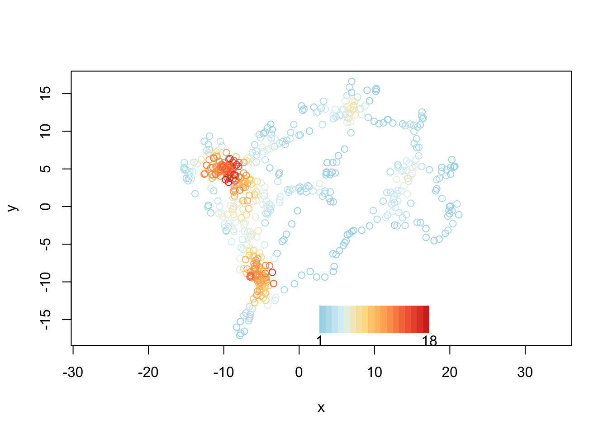

The recurse package can be used to analyze animal trajectory data to look for returns to a previously visited area, i.e. revisitations. These revisits cold be interesting ecologically for a number of reasons. For example, they could be used to identify nesting or denning sites or important resource locations such as water points. Other scenarios include trapline foraging behavior, large-scale movement patterns like migration, and predator-prey interactions.
The recurse package is flexible and supports identifying revisitations of the trajectory itself for single or multiple individuals as well as pre-specifying locations of interest for which to calculate revisitations. In addition to the number of revisits to each location, additional metrics are calculated including the residence time at each location and the time between revisits.
Here is a simple example showing how to calculate revisits for a trajectory, using an example data set in the package. For more examples, look at the package vingette or our paper on the package.
Bracis C, Bildstein K and Mueller T (2018). Revisitation analysis uncovers spatio-temporal patterns in animal movement data. Ecography. doi: 10.1111/ecog.03618
library(recurse)
data(martin)
revisits = getRecursions(martin, radius = 2)
plot(revisits, martin, legendPos = c(10, -15))